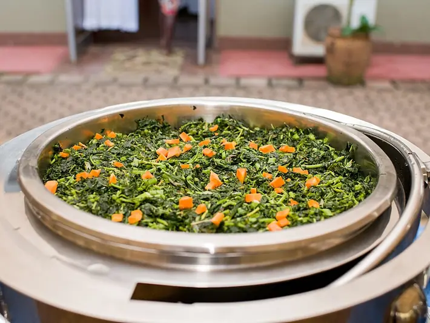

Фото: Joekyabby1, CC BY-SA 4.0

Овощи на пару
Брокколи, цветная капуста, морковь и кабачок на пару с лимоном
20 мин4 порц.127 ккал на порциюБ 5 · Ж 6 · У 15Интернациональная кухня
Продукты на 4 порц.
- Брокколи300 г
- Цветная капуста300 г
- Морковь2 шт
- Кабачок1 шт
- Вода1 л
- Оливковое масло1 ст. л.
- Лимон по желаниюпо вкусу
- Соль2 щеп.
Как готовить
- Брокколи и цветную капусту разберите на соцветия. Морковь нарежьте кружками толщиной 5 мм, кабачок - полукружьями толщиной 1 см.
- Налейте воду в кастрюлю, доведите до кипения на сильном огне и поставьте сверху решётку или дуршлаг.
- Положите морковь, накройте крышкой и готовьте 5 минут.
- Добавьте брокколи и цветную капусту, готовьте 5 минут.
- Добавьте кабачок и готовьте ещё 3-4 минуты, пока нож не входит легко, но овощи ещё упругие.
- Переложите в миску, полейте маслом, лимонным соком и посолите.
Совет. Брокколи должна остаться ярко-зелёной: если потемнела, переварили. Вода не должна касаться овощей.